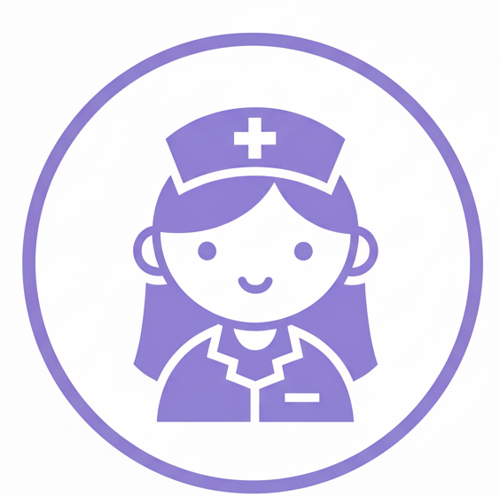

A startup HealthMed nasceu de uma observação clara: o sistema de saúde é movido por pessoas, mas essas pessoas estão exaustas e sobrecarregadas por processos manuais e escalas ineficientes. Assim, criamos uma solução que vai muito além de uma simples agenda de plantões. Estamos construindo a infraestrutura inteligente que sustenta a operação hospitalar moderna. Sabemos que uma escala mal gerida não é apenas um problema administrativo; é um risco para a vida. Resolvemos a falta de profissionais especializados em momentos críticos e combatemos a sobrecarga de trabalho que leva ao erro médico e ao burnout. Eliminamos o caos de planilhas de papel, as mensagens perdidas em grupos de WhatsApp e a insegurança financeira dos profissionais que dedicam suas vidas ao cuidado.
Através de uma plataforma intuitiva e robusta, automatizamos a montagem de escalas complexas, conectamos em tempo real as necessidades do hospital à disponibilidade dos profissionais garantindo que cada setor tenha exatamente o suporte necessário, com a especialidade correta, 24 horas por dia.
Acredito que a tecnologia deve servir para humanizar a saúde. Ao otimizar a logística e reduzir o estresse operacional, devolvemos aos hospitais a eficiência e aos profissionais a alegria de exercer sua vocação com equilíbrio.